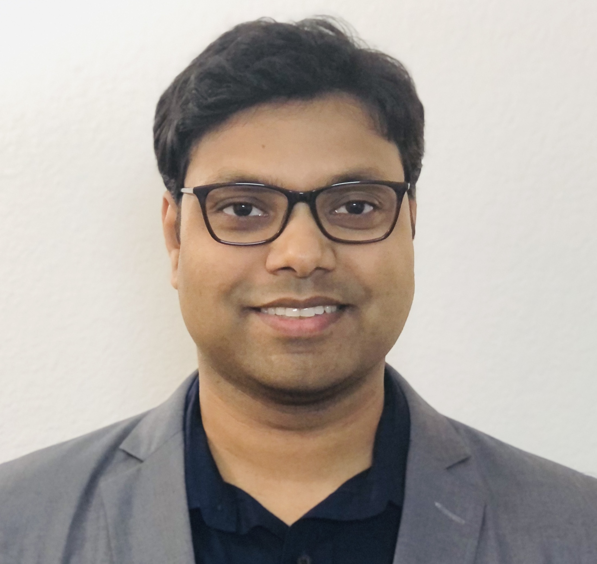

I am an Assistant Professor in the Computer Science and Engineering department of J.B. Speed School of Engineering at University of Louisville . I am affiliated with the Louisville Automation and Robotics Research Institute (LARRI) and directing the Autonomous Intelligent Mobile Systems Laboratory (AIMSLab) .
My research focuses on Intelligent and Autonomous systems in the domain of the Internet-of-Things (IoT) and Robotics, including Unmanned Aerial Vehicles (UAV), Connected and Autonomous Vehicles (CAV), and Tactile Internet based robotic systems. On the technical side, my research employs multimodal sensing, advanced communications (e.g., 5G/6G,mmWave, LTE, C-V2X, M2M) and efficient computing systems and architecture (e.g. Edge/Fog Computing, Device-mapping, Virtualization), developing innovative distributed intelligence using optimizations and AI-driven approaches.
Prior to joining UofL, I was a Postdoctoral Scholar in the Electrical and Computer Engineering Department at the University of California, San Diego . I was affiliated with the Mobile Systems Design Lab and the Center for Wireless Communications at UCSD. I obtained my PhD in Computer Science from University of California, Irvine in 2019 and Masters in Computer Science from University of Texas at Dallas in 2013. In Summer 2012, I was a visiting researcher in the WINLAB of Rutgers University, NJ . I have had research internship experience in Nokia Bell Labs, Huawei Research labs and Blackberry, as well as prior work experience as a software engineer in Cisco Systems and as a systems engineer at IBM.
*** I am looking for motivated students to join my research group. For details, check here .
Research Interests
Intelligent and Autonomous Systems (UAVs, Connected and Autonomous Vehicles, Tactile Robots), Internet of Things (IoT), Wireless Networks (5G, LTE, C-V2X, WiFi, D2D),
Distributed Computing (Edge/Cloud), Video Streaming and Processing, AR/VR/MR, Machine Learning, Smart and Connected Health
Recent News
09/2021: One paper on sustainable vehicular edge computing is accepted in IEEE Transaction on Vehicular Technology 2021
07/2021: Joined as a tenure-track assistant professor at the University of Louisville (UofL)
06/2021: One collaborative paper got accepted in IEEE CLUSTER 2021
05/2021: Our paper on Contention-aware ML in Embedded Systems is accepted in IEEE AICAS Conference 2021
02/2021: Two collaborative papers got accepted in ACM Southeast (ACMSE) Conference 2021
News Archive >>
11/2020: Our paper on Head Network Distillation for Split DNN is accepted in IEEE ACCESS 2020 Journal
09/2020: Our paper on State of Energy (SoE) Prediction with CNN-LSTM
is accepted in IEEE IGESSC 2020
08/2020: Serviing as TPC member for the Graduate Forum of COMSNETS 2021
08/2020: Completed Micro-MBA at Rady School of Management, UC San Diego
06/2020: Invited paper on Computing for Connected and Autonomous Vehicles
is accepted in special session of DAC 2020
05/2020: Our paper on Infrastructure Assistance for Autonomous UAVs
is accepted in DCOSS 2020
03/2020: Our extended abstract on Distilled-split DNN
is accepted in SOCAL Machine Learning Symposium 2020
02/2020: Our paper is accepted in IEEE ICC Edge Machine
Learning for 5G Mobile Networks and Beyond 2020
01/2020: Our paper on Dynamic Distributed Computing for
Autonomous UAVs is accepted in IEEE ICC 2020
09/2019: Joined UCSD as a Postdoctral Scholar at Mobile System Design Labs in ECE department
08/2019: Our Paper on Information Autonomy for UAV is
accepted in IEEE MILCOM 2019
08/2019: Successfully defended my PhD dissertation, Computer Science Dept., UC Irvine
08/2019: Our paper on Distilled-split Deep Neural Network
is accepted in ACM Mobicom HotEdgeVideo 2019
07/2019: Received NSF travel grant offer to attend ACM
SIGCOMM 2019 conference
06/2019: Our paper on Edge Computing for UAVs has been
accepted in IEEE SIGCOMM MAGESys 2019
05/2019: Presented Collaborative demo with UAV and Edge
Computing in the STIP workshop at UCSD
05/2019: Invited to present Poster at 5G SDR Challenge in Air Force Research Laboratory, Dayton, OH
10/2018: Presented a poster in the UCI ICS 50th
Anniversary Celebration at Beckman Center, Irvine, CA
07/2018: Our paper FlyNetSim: An Open source UAV Network
Simulator is accepted in ACM MSWiM 2018
05/2018: Received two student travel grants for ACM
SIGMETRICS 2018 and ACM MobiHoc 2018
04/2018: Received the People's Choice Award Link ]
04/2018: Our paper on Robust Multi-Path Communications for
UAVs has been accepted in IEEE SECON 2018
03/2018: Our
paper has been published in IEEE Transactions on
Cognitive Communications and Networking (TCCN )
02/2018: Our paper on eBPF based NFV has been accepted in
IEEE INFOCOM Workshops (INFOCOM SCAN 2018)
12/2017: Research featured in UCI
news , DoD
News , Technology News , and PC Magazine
11/2017: Our team "DeepEdge" participated
in DARPA Hackfest
2017 at NASA Ames Research Center, CA
02/2017: Our
paper on Network selection has been accepted in
IEEE INFOCOM Workshop (INFOCOM SCAN 2017)
09/2016: Our paper on Interference
management for Video transmission has been accepted in IEEE
ICNC 2017
08/2016: Received Third Best Poster Award
07/2016: Our paper on Cognitive
Interference Control in Urban IoT has been accepted in IEEE
Globecom2016
06/2016: Joined Huawei Research Lab, Santa
Clara, CA for Summer 2016 internship
06/2016: Received the Best Poster Award Link ]